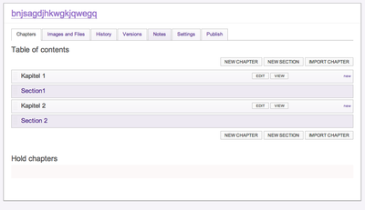

For a long time there was a test() method available in ZPT:
<td tal:attributes="class python: test(some_condition, 'even', 'odd')">
With the move to browser views the test() had gone and you had to write something like
<td tal:attributes="class python: some_condition and 'even' or 'odd')">
as a replacement. This notation may have side-effects in some rare cases.
Now with Python 2.6 or higher you can rewrite your code the following way
<td tal:attributes="class python: 'even' if some_condition else 'odd')">
in a more clean way. In addition this notation is free of side-effects.
Over the last two or three years we have been using MongoDB in some mid-size projects.
Now it is time to say goodbye to MongoDB for a variety of technical reasons:
- the currently memory model of MongoDB based on memory-mapped files is brain-dead. Leaving memory management to the operating is a nice idea - in reality it does not scale and does not play very well. There is no single way to control the memory usage using system tools except maintaining mongod instances on dedicated virtual machines without running further services. There are numerous complaints from people about this stupid architectural decision and 10gen is doing nothing to change this brain-dead memory model.
- Locking: a global server lock for a scalable database solution is a no-go - especially since MongoDB supports only atomic operations. Now there is relief in the making with more granular locking or the temporary yielding of the lock during long-running write operations. But this is more a workaround than a solid and scalable solution.
- Query engine: the query engine of MongoDB still can only use of one index per query. How insane is this? There is no obvious reason why this limitation exists. The index model of MongoDB is very similar to relational databases - in fact: it borrows lots of ideas from relational database. Having worked on indexes and search engines myself for more than a decade I can not recognize any particular reason why the query engine can not use multiple indexes per query - the query engine appears poorly implemented.
- Query language: using JSON as a query language was a bad decision. The current JSON query language works for standard queries but the functionality of the operators is limited. It is still not possible to express arbitrary queries like in SQL using JSON. One would argue: not needed - but in reality there are always cases where you need more complex queries. The only way around is to implement something client-side or use the server-side JS code execution (single-threaded, slow). Having no option to perform an operation comparable to UPDATE table SET foo=bar WHERE.... (which is possibly a low-hanging fruit). There are various odds and ends with the query language and its implementation. E.g. why don't you get an error message when using the $and operator with MongoDB version that does not support it? Why does MongoDB not complain here about an inappropriate usage of operators? Look at the mailing list and discover such flaws all day long in various postings. Silently discarding errors is a worse thing. If there is a problem then raise the issue and don't hide it under the carpet.
- Map-Reduce: Map-reduce in MongoDB feels like a useless appendix added at some point to MongoDB. Same problem as with server-side code execution: it blocks. Now instead of fixing a bad implementation or fixing the underlaying architectural issues, 10gen seems to address the MR limitations by supporting Hadoop for the MR part - either they don't trust their own MR implementation or they won't/can't fix it. No, we do not need more tools for doing map-reduce - there are already too many moving parts in a setup for scalable applications. Either fix MR inside MongoDB or throw it out completely.
- Sharding: yet another misfeature of MongoDB. Going from a single server installation to a partitioned setups is *huge*. You need at least two replica sets for the shards, three config servers and the load balancers. That's like building a skyscraper beside a small town-house.
- Data-center awareness: yet another feature that has been tinkered together. Replica sets only support one primary with multiple secondaries. Writes can only go to one primary. Running a replica set across multiple datacenter is doable but writes can only go to one primary in one data-center. Assuming have a replica set with nodes in Europe, US and Asia with the current master being located in US: all writes from US and Asia need to be performed against the master in US and replicated back to the secondaries in Europe and Asia - insane and not scalable.
- The "safe" mode is off by default: who made this idiotic decision? Many reports why people about data los have been seen - just for the reason that "safe" is off by default. Although this is documented here and there: does such a decision bring trust to MongoDB? Safe mode must be enabled by default - people should be able to turn it off for performance reasons and with the understanding that turning it off may lead to data loss unless they perform explicit error checking client-side.
- Journaling: MongoDB pre-allocates 3 GB of data for journaling - independent of the actual database size(s) - insane for small installations.
MongoDB is currently more about marketing and hype than it deserves. The primary goal of 10gen is currently running through the world in order to tell the world how cool MongoDB is. The reason is clear: 10gen is trying to play all other databases in the same market against the wall with the funding they received from their investors. It is a legitimate goal of 10gen but the technical foundation is shaky. Many things like the query language and query processor are half-baked since MongoDB 1.2 (my first version I used) - and no significant improvement have been made since. Many people said that the MongoDB 2.0 version should have been 1.0 - and I agree with that. Yes, MongoDB is an emerging technology (with potential) but MongoDB is hyped by 10gen as a new enterprise-level database (and perhaps 10gen wants to position MongoDB against Oracle & friends). The truth is that many things are half-baked or need some more iterations in order to make them usable for public consumption.

We had some internal discussions about using LessCSS in upcoming Plone projects for simplifying work (more compact CSS code, less redundant information etc.) so I played with LessCSS a bit today. The basic problem I cam e across was the issue how to integrate LessCSS with Plone from the web designers prospective. The typical working pattern of a Plone web designer is the following:
- start your instance in debug mode
- edit the styles files (.css) on the file-system
- save style files
- reload site in browser
Working with LessCSS is slightly different:
- you need to edit a .less file
- you need to compile the .less file manually using the lessc compiler
So basically one manual step more than necessary.
Here is a quick solution for the problem:
Based on the watchdog module for Python I wrote a small observer module that can be included with your package easily (from the __init__.py file of your package). The code below will start the observer only if your Zope/Plone instance is running in foreground.
Example:
from App.config import getConfiguration
zconfig = getConfiguration()
if zconfig.debug_mode:
import lesscss
lesscss.start()
After restarting your instance a dedicated observer thread will watch for file system changes inside the current policy or theme package. The event handler listens only to files matching *.less. For modification and creation event the handler will automatically call the LessCSS compiler and generate a corresponding .css file inside the same directory.
Cavecats: you need to add the watchdog egg manually to your buildout configuration
Produce & Publish News/Plone Konferenz wrap-up
Some notes on the 1. German Plone Conference in Munich and recent developments in Produce & Publish

The first German Plone Conference is finally over. It was a great conference with about 170 attendees - both Plone developers, Plone users and interested people. Especially a lot of new people from the Plone users side made this conference an interesting event - lots of interesting people and interesting conversations.
I gave a talk on the state of producing, publishing and distribution of electronic contents using our Produce & Publish plattform (slides, German only).
By accident an attendee point me to a PDF converter with similar capabilities to our current converter PrinceXML used for professional high-quality PDF documents. The new converter is PDFreactor and is in many ways comparable to PrinceXML. It also accepts HTML/XML for the content part and supports the styling of output PDF document through CSS. In fact PDFreactor provides a similar output compared to PrinceXML when using the unmodified stylesheets of Produce & Publish by default.
Some remarkable differences (and advantages over PrinceXML) are
- support for tagged PDFs (PDF/a)
- support for images in CMYK colorspace
- generates PDF forms
- PDF signing and encryption
- support for generating barcodes and QR codes
- slightly cheaper than PrinceXML
Downsides of PDFreactor
- slower (based on Java) but supports a webservice API to avoid startup times [Update: PDFreactor is usually run as a server process and access through a webservice API)
- significant higher memory fingerprint
- no floating of images or tables [Update: floating is possible]
- font-configuration not possible through CSS (fonts must be configured as part of the PDFreactor configuration) [Update: PDFreactor version 6 now supports arbitrary webfonts]
What are the benefits for the Produce & Publish plattform?
- another high-quality PDF converter option
- more scenarios where Produce & Publish might ba good choice
- optional PDF generation of accessible PDF documents when needed
- (optional) support of PDFreactor on the Produce & Publish server side (through the newest zopyx.convert2 module with support for PDFreactor)
- (optional) support of PDFreactor through the Produce & Publish Plone client connector (converter=pdf-pdfreactor parameter)
- no direct support for PDFreactor for generating PDF from within the Produce & Publish Authoring Environment (hard-coded PDF converter name - likely to be lifted soon)
Booktype vs. Produce & Publish
A short review of Booktype and a comparison with my own Produce & Publish product.

Last week a new product Booktype appeared in public. Booktype is an open-source authoring solution for creating PDF files and EBooks through the web. Booktype is completely implemented in Python (it is uses Django). It follows the paradigm Single-Source Multi-Channel Publishing which basically means: one content-source for all kind of publications and output formats. As author of the Produce & Publish solution I became curious and did some testing.
The first visual difference to Produce & Publish is that the UI is completely task-oriented. The primary task is: I want to write a book.

Produce & Publish itself supports the same functionality but the approach is a bit more generic and basically offers only the standard Plone user interface to content authors. Produce & Publish provides infinite nesting of chapters, sections etc. while Booktype provides only chapters and sections.
Editing content in Booktype basically works the same way as in Plone. Booktype uses TinyMCE as primary content editor. The editor opens inline (similar to former Plone versions using KSS for inline editing). Honestly I love the inline editing in Booktype feature (as I loved it in Plone 3) - it gives me a better user experience.

In order to generate an Ebook or a PDF file Booktype provides some simple wizards where you can choose from some pre-defined options like fonts, font sizes etc.

The conversion request seems to end up in queue. After the conversion Booktype will present you an URL where you can download the generated output format.
So far, so good. Booktype is very easy to use. The perfect solutions for average editors since the user interface gives you only the options that you need to get your task (writing a book) done. Produce & Publish in comparison exposes many more advanced options to the average editor. So the complexity of Produce & Publish might be overwhelming for this editor type.
Comparison of features: the feature list of Produce & Publish is more complete compared to Booktype. Produce & Publish provides powerful support for features like cross-references, listings for indexes, tables and images, sophisticated handling of images and their resolution. Apart from that each content project in Produce & Publish can be configured with individual stylesheets, assets and templates. Its overall architecture appears more open and pluggable (perhaps as a result of using features of the Zope Component Architecture where needed).
Comparison of output results: at the time of writing I have no idea how content is converted to PDF or to EPUB. The open-source code base does not contain any references to external converters. I assume Booktype provides conversion as a hosted service. A tests reveal that the creator of the PDF files is "ghostscript" but there is no indication what is used for generating the input for "ghostscript". The overall PDF quality is average. Produce & Publish provides high-quality hyphenation support (similar to TeX or LaTeX) - nothing that I could detect in Booktype. Produce & Publish also support features like multi-column rendering of content in PDF, image floats etc.
Overall conclusion: Booktype is great tool for average content editors that need to write a book without having the need to deal with stylesheet or complex configurations. It provides a limited functionality and a great user interface for getting the job done. However Produce & Publish is the better solution (feature-wise and quality-wise).
Produce & Publish print production appeared from Amazon
Latin learning material produced using Produce & Publish is now available from Amazon
We are happy to announce that the first five production implemented using our Produce & Publish plattform are now available on Amazon.
The Plone-based Produce & Publish plattform is used to produce high-quality learning materials for the Latein education in German schools.
The project Lektürewerkstatt maintains the complete content inside Plone and generates a PDF from the content that is directly used for the print process without further post-processing.
References:
- www.produce-and-publish.com
- www.zopyx.com
- Case study: "Einsatz von Produce & Publish am Albrecht-Ernst Gymnasium"
ZOPYX Limited
Andreas Jung
Charlottenstr. 37/1
D-72070 Tübingen
Tel. +49-7071-793376
www.zopyx.de
Implementing content-types for Plone site is one part of every typical Plone project. Styling & testing is another one. Both testers and designer need content for testing.
As part of a new project I decided to provide example content for each new content-type. The two core components are the loremipsum module for Python and the lorempixel.com web-service. The Python module can be used to generate single sentences of text or multiple paragraphs of text. The web-service provided random images in arbitrary sizes for you.
Here is a picture of a sample glossary

and one of a simple picture database:
{kind=link}
Here is some example code for generating content and random image from using the mentioned services:
def gen_paragraphs(num=3):
return u'/'.join([p[2] for p in loremipsum.Generator().generate_paragraphs(num)])
def gen_sentence():
return loremipsum.Generator().generate_sentence()[-1]
def gen_sentences(length=80):
return u'/'.join([s[2] for s in loremipsum.Generator().generate_sentences(length)])
def random_image(width, height):
url = 'http://lorempixel.com/%d/%d/' % (width, height)
return urllib2.urlopen(url).read()
The code for generating a gallery as seen above looks like this:
def installAssets(self, site):
service = site.restrictedTraverse('deutschland/de/service')
assets = invokeFactory(service, 'Folder', 'Assets')
for width,height in ((200,200), (400,400), (600, 400), (800, 600),
(800,800), (1024, 768))
imagefolder_id = '%sx%s' % (width, height)
images = invokeFactory(assets, 'Folder', imagefolder_id)
for i in range(20):
img = invokeFactory(images, 'Image')
img.setImage(random_image(width, height))
img.reindexObject()
The invokeFactory() method used here is just a tiny wrapper around the standard invokeFactory() method of a folder object that generates a random title and a normalized id for the new content object plus doing some pre-allocation of the description and text field (if available) on the created content-object.
The complete code can be found on the website of my Plone partner Veit Schiele (German only).

Today we released our Produce & Publish Client Connector for Plone as open-source.
By doing this the Plone community will gain a fully functional infrastructure for generating PDF documents for free (and possible other office formats depending on the installed converters).
Free in this context means that you can use all related Produce & Publish components for free.
As free PDF converter you can use PISA which is installed automatically as part of the Produce & Publish server installation.
Using PISA gives you a reasonable PDF quality however you can not generate PDF e.g. containing an arbitrary table-of-contents since the functionality of PISA is way to limited here (you need PrinceXML as converter if you are interested in high-quality PDF documents).
A quick intro into using the Produce & Publish Client Connector for Plone:
- setup the Produce & Publish server (see http://docs.produce-and-publish.com/server/installation.html for details)
- add zopyx.smartprintng.plone to the eggs option inside your buildout, re-run buildout and restart
- zopyx.smartprintng.plone will not show up in the quick installer of Plone since it will only configure some additional browser views
- check the documentation of the Plone Client Connector
- in order to use the Plone Client Connector with PISA you must pass in an additional URL parameter like http://localhost:8080/Plone/front-page/@@asPlainPDF?converter=pdf-pisa
Note: the Produce & Publish Authoring Environment as a solution for Single-Source Multi-Channel Publishing remains a commercial component and therefore it is not freely available.
References

A lot of polishing, fine-tuning and additional new features made it into the new Produce & Publish 2.1 release.
Changes
- internal cleanup of the transformation code (switched from BeautifulSoup to lxml) resulted in a much better performance and higher stability
- better handling of the conversion stylesheets (drag & drop support in the edit mode of the conversion folder view)
- Publish-to-Dropbox: generated content can be upload directly into the Dropbox "cloud"
- "Preflight" functionality for additional checks before running a conversion
- better integration with Calibre; better handling of EPUB specific conversion parameters (e.g. coverpage, authors etc.)
- new "My Authoring projects" portlet
- cleanup functionality
- better error checks and more robust conversions
Full release notes
- http://docs.produce-and-publish.com/release-notes/zopyx.authoring-docs/HISTORY.html
- http://docs.produce-and-publish.com/release-notes/zopyx.smartprintng.plone-docs/HISTORY.html
References
This is a followup on my former blog post on the Samsung Galaxy Tab.
Hardware
The Galaxy Tab hardware appears reasonable. I am not looking into some particular hardware specs and won't compare it to the Apple iPad. The hardware feels solid and comparable with the Apple iPad. The tablet is fast and responsive. The display is ok. The CPU performance is "fast enough" however I noticed a significant slower booting time after enabling encryption (however running with encryption enabled does not have a noticeable impact on the overall user experience). From time to time I encounter a loss of WIFI connectivity at my home (with two strong WIFI signals) - the device switched to 3G and sometimes it is not possible to switch back to WIFI without rebooting the device.
Software
Lots of things under Android Honeycomb are unpolished and fragile. Key applications like the Android Market do crash frequently compared to core applications provided by Google (Maps, Mail) running very solid.
Many applications differ use different usability concepts- especially applications that are obviously designed for a phone are hard to use on a tablet.
The task manager is pretty much unusable. It only lists the last seven applications used...I am often running more than seven applications and it seems impossible to get back to applications launched earlier.
The default desktop launcher of Honeycomb is laughable...not sure which moron designed this application..It is neither looking nice nor is it usable...comparing it with iOS feels like using Windows 95 vs. MacOS. I installed GO Launcher which provides some relief here but the desktop still feels clumsy. Being able to customize my desktop with widgets etc. is a win.
The usability of the Android Market sucks: it often returns results that are either completely unrelated to my query or refer to applications in a different language (other than German or English)
Compared to iOS I really like the behavior of the "Back" button. E.g. the email reader can open an external application to display a PDF file..using the "Back" button I can get back from the PDF reader into the context of my email reader (which is not possible with iOS).
Music- and video players are of mixed quality - some provide a nice feature set but look ugly (perhaps only optimized for phone displays). Syncing of music....fragile...no comparison to the simplicity of syncing my iPhone with iTunes (love it or not)).
Annoyances
- Why do I have to enter my PIN three times during the bootphase? One time for the decryption of the boot partition is ok and one time for unlocking the SIM but the third time? (two times needed on my iPhone).
- Occasional loss of WIFI connectivity (see above)
Conclusion
The Galaxy Tab (and possibly other Android 3 backed devices) is a tinker device. The "It just works" karma does not apply to devices. It is nice having a device providing flexibility and openness (compared to iOS) but the overall user experience remains mixed. The iPad is superior over the Galaxy Tab. Not that I am switching now to the iPad (since I can deal with the annoyances of the Galaxy Tab and Android). but I think that I would not recommend an Android based tablet to my mother